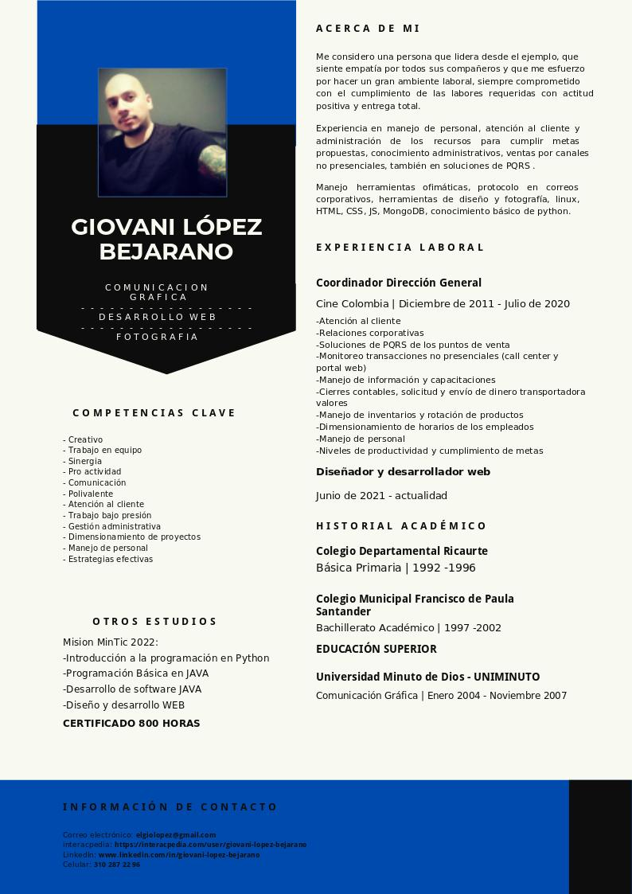

Acerca de mi:
Mi nombre es Giovani Lopez Bejarano, soy comunicador gráfico de la UNIMINUTO y estudie un diplomado en desarrollo web y de software en la Universidad el Bosque.
actualmente me dedico mayormente al diseño y desarrollo web y a corto plazo espero estudiar tecnologia en desarrollo de software.
Educacion formal:
Basica primaria: Colegio Departamental Ricaurte | 1992 hasta 1996.
Bachillerato academico: Colegio Municioal Francissco de Paula Santander | 1997 hasta 2002
Superior: Corporacion Universitaria Minuto de Dios Tecnologia Profesional | 2004 hasta 2007
Superior: Universidad el Bosque diplomado en desarrollo web y de software | 2001 cerfificado 800 horas
Experiencia laboral
2007 hasta 2011 | diseñador grafico: funciones analisis diseño e implementacion de soluciones.
2011 hasta 2020 | Coordinador direccion general Cine Colombia
2020 actual | Diseñador y desarrollador web: web sites, landing pages, diseño web, desarrollo web, imagen corporativa entre otros.
Mi Hoja de vida
Siempre he creido y aplicado el principio de menos es mas, lo valioso del minimalismo no tiene comparación.
